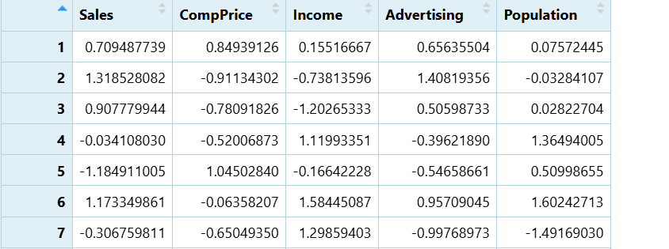
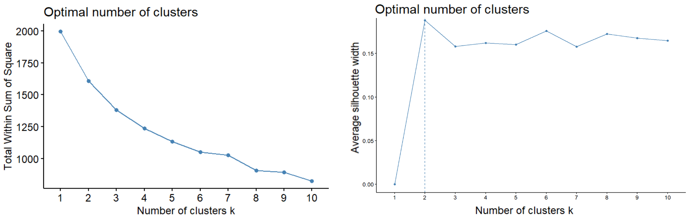
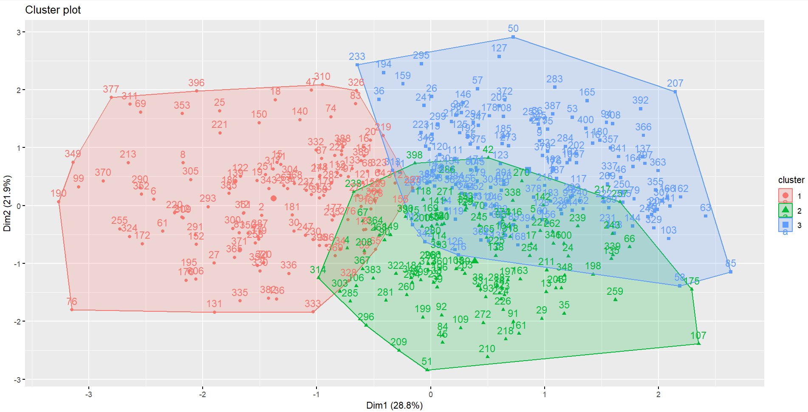

install.packages(c("tidyverse", "factoextra", "cluster", "ISLR"))Applying Cluster Analysis in R for Business Segmentation
Burcu Gündüz Altay
400999385 - altay.burcu@stud.hs-fresenius.de
Applying Cluster Analysis in R for Business Segmentation
Scan QR Code
Why Clustering Matters in Business
Clustering enables companies to discover natural customer or store groups directly from data without predefined labels.
This leads to:
Stronger data-driven decision
Smarter resource allocation
More personalized marketing
Improved pricing strategies
What Is Cluster Analysis?
It is a method that groups similar observations based on selected variables without predefined labels or a target variable.
It aims to:
- Maximize within-cluster similarity
- Maximize differences between clusters
Basic Prensiples : Similarity, Dissimilarity, Unsupervised Learning
Clustering Methods in Business Analytics
Main focus – K-Means Clustering
Most commonly used in business segmentation
Fast and easy to interpret
Groups data into k clusters based on similarity
Works well with balanced, spherical clusters
Sensitive to outliers & variable scaling
Choosing the Number of Clusters
Two common evaluation methods:
Elbow Criterion
Looks at the decrease in within-cluster variation
“Elbow point” = optimal balance
Silhouette Score
Measures how well each point fits its cluster
Higher score = better separation
K-Means: How It Works in R
1️⃣ Data Preparation: Scale selected variables → equal contribution
2️⃣ Choosing k: Elbow + Silhouette → best cluster number
3️⃣ Running K-Means: Algorithm assigns each point to its nearest cluster center
4️⃣ Visualization: Plot clusters in reduced dimensions
5️⃣ Interpretation: Translate segments into business insights
Exercise – Store Segmentation with k
Objective : Segment retail stores using sales & market variables and interpret business results.
Dataset :
Carseats (from ISLR package)
Required R packages :
Variables Used for Segmentation :
Sales, CompPrice, Income, Advertising, Population
Exercise – Store Segmentation with k
Step 1 — Load Packages & Dataset
Upload CarSeats data
library(ISLR)
library(tidyverse)
library(factoextra)
library(cluster)
data("Carseats")
df <- CarseatsStep 2 — Select & Scale Variables :
Scale the variables using k-means so that all variables have the same weight during clustering.
df_scaled <- scale(df[, c("Sales", "CompPrice", "Income", "Advertising",
"Population")])
summary(df_scaled)
Step 3 — Evaluate k with Elbow & Silhouette
Using elbow and silhouette plots to determine how many clusters k are appropriate for store segmentation.
fviz_nbclust(df_scaled, kmeans, method = "wss") # Elbow
fviz_nbclust(df_scaled, kmeans, method = "silhouette") # Silhouette
Step 4 — Run K-Means with k = 3
Run the k-means algorithm with the selected number of clusters e.g. k = 3 and examine the size and centres of each cluster.
set.seed(123)
k3 <- kmeans(df_scaled, centers = 3, nstart = 25)
k3$size # cluster sizes
k3$centers # cluster profilesStep 5 — Compare with k = 4 and Silhouette Scores
Compare the average silhouette scores for k = 3 and k = 4 and determine which model provides better cluster separation.
library(cluster)
set.seed(123)
k4 <- kmeans(df_scaled, centers = 4, nstart = 25)
sil3 <- silhouette(k3$cluster, dist(df_scaled))
sil4 <- silhouette(k4$cluster, dist(df_scaled))
mean(sil3[, 3])
mean(sil4[, 3])Step 6 — Visualise the Segments
Visually examine how stores are segmented according to selected variables.
fviz_cluster(k3, data = df_scaled)
Strategic Benefits of Cluster-Based Segmentation
Better targeting & personalized communication
Smarter resource allocation (sales force, budget, inventory)
Pricing strategies tailored to each segment
Identify high-potential segments
Improved CRM & retention performance
Higher return from marketing investments
Technical Summary
What we did :
Selected 5 business variables
Scaled data for equal contribution
Found optimal k
Ran K-Means and assigned stores
Visualized segments and checked separation
Business Summary
What it means for business :
Better targeting & resource allocation
Stronger data-driven decisions
More effective pricing & promotions
Growth opportunities by segment
Hartigan, J. A., & Wong, M. A. (1979). Algorithm AS 136: A k-means clustering algorithm.Journal of the Royal Statistical Society: Series C (Applied Statistics), 28(1), 100–108.
James, G., Witten, D., Hastie, T., & Tibshirani, R. (2021). An introduction to statistical learning: With applications in R (2nd ed.). Springer.
Kassambara, A., & Mundt, F. (2020). Factoextra: Extract and visualize the results of multivariate data analyses. https://CRAN.R-project.org/package=factoextra
Rousseeuw, P. J. (1987). Silhouettes: A graphical aid to the interpretation and validation of cluster analysis. Journal of Computational and Applied Mathematics, 20, 53–65.